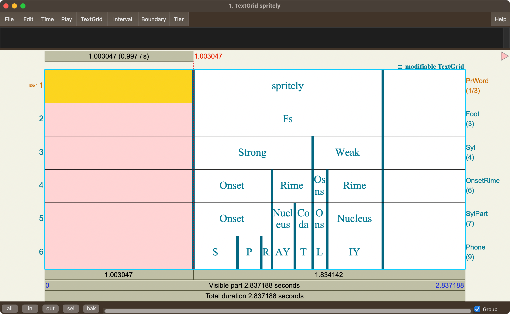
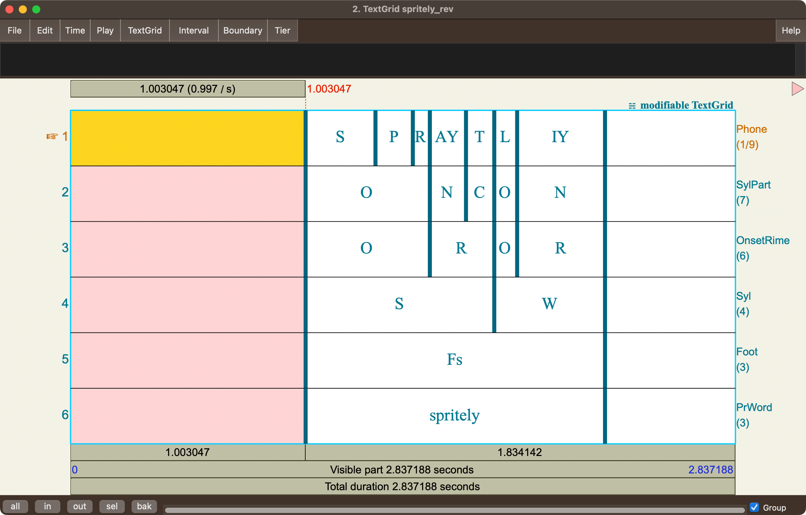
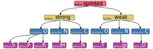

from aligned_textgrid import AlignedTextGrid
from aligned_textgrid import SequenceInterval
from aligned_textgrid import Word, Phone
from aligned_textgrid import custom_classes
issubclass(Word, SequenceInterval)TrueThe core class in aligned-textgrid is the SequenceInterval from which new sequence interval classes can be subclassed. The Word and Phone classes are, themselves, subclasses of SequenceInterval.
from aligned_textgrid import AlignedTextGrid
from aligned_textgrid import SequenceInterval
from aligned_textgrid import Word, Phone
from aligned_textgrid import custom_classes
issubclass(Word, SequenceInterval)TrueThe most important information every sequence interval class has is its .superset_class and .subset_class, which needs to be another (but different!) SequenceInterval subclass.
custom_classesIf you don’t want or need any additional bells and whistles beyond what SequenceInterval already provides, you can just use the custom_classes() function. For example, if you wanted your own interval classes for a Word, Syllable, and Phone:
[aligned_textgrid.custom_classes.Syllable,
aligned_textgrid.custom_classes.MyWord]The reciprocal .subset_class and .superset_class relationships will be set from left to right for the class names provided to class_list.
custom_classes() when creating an AlignedTextGridThe custom_classes() returns a list of sequence interval classes, which is also a requried input when creating a new AlignedTextGrid object, so you you could create the new sequence interval classes on the fly.
Let’s say you began with this textgrid representing the syllable structure of a word:

You could create an AlignedTextGrid object like so:
We can see that the textgrid was successfully parsed by printing spritely.
AlignedTextGrid with 1 groups, each with [6] tiers. [['PrWord', 'Foot', 'Syl', 'OnsetRime', 'SylPart', 'Phone']]Within the first tier group, the tier with index 4 is the SylPart tier. Printing it, we can see that its superset class has been set to OnsetRime and its subset class has been set to Phone.
We can look at the labels for this tier:
And we can print out some information about the index 1 interval.
It’s possible that you’ll be working with textgrids where the largest superset is not the topmost tier. For example, here is the spritely textgrid reversed.

The custom_classes() function still needs the hierarchy to be arranged from left to right, but you can also specify a return_order, either by numeric index or by name, that the new classes get returned.
custom_classes(
class_list = ["PrWord", "Foot", "Syl", "OnsetRime", "SylPart", "Phone"],
return_order=[5, 4, 3, 2, 1, 0]
)
# -or-
# custom_classes(
# class_list = ["PrWord", "Foot", "Syl", "OnsetRime", "SylPart", "Phone"],
# return_order=["Phone", "SylPart", "OnsetRime", "Syl", "Foot", "PrWord"]
# )[aligned_textgrid.custom_classes.Phone,
aligned_textgrid.custom_classes.SylPart,
aligned_textgrid.custom_classes.OnsetRime,
aligned_textgrid.custom_classes.Syl,
aligned_textgrid.custom_classes.Foot,
aligned_textgrid.custom_classes.PrWord]The order of these classes in the output list may have Phone first, but the topmost class in the hierarchy is still PrWord
spritely_rev = AlignedTextGrid(
textgrid_path= "../resources/spritely_rev.TextGrid",
entry_classes = custom_classes(
class_list = ["PrWord", "Foot", "Syl", "OnsetRime", "SylPart", "Phone"],
return_order=[5, 4, 3, 2, 1, 0]
)
)
print(spritely_rev)AlignedTextGrid with 1 groups, each with [6] tiers. [['PrWord', 'Foot', 'Syl', 'OnsetRime', 'SylPart', 'Phone']]The classes generated by custom_classes() have only the default attributes and methods available within SequenceInterval. If you want any more customized methods or attributes within a sequence interval, you’ll need to create the subclass yourself. For example, let’s say you wanted to create a custom MyWord, Syllable, SyllablePieces, MyPhone classes, where the Syllable class had as an attribute .has_onset, and .open_syllable. The goal parsing for a word like “sprinted” is illustrated below.

The minimal requirements for a custom class are:
SequenceInterval..superset_class has been set with .set_superset_class, or its .subset_class has been set with .set_subset_class.SequenceIntervalHere’s the minimal setup to create a sequence interval subclass.
To test your new subclass, you’ll have to import Interval from praatio.
Class MyWord, label: test, .superset_class: Top, .super_instance, None, .subset_class: BottomAs you can see, MyWord has defaulted to have Top as its superset class and Bottom as its subset class. We’ll reset these after creating the remaining subclasses. Both SyllablePart and MyPhone will be created the exact same way as MyWord, since we’re just using the sequence interval defaults for them.
For the specialized properties of Syllable, we’ll start the subclassing the same, but add some properties that return True or False for whether or not the syllable has an onset or a coda.
Now, after parsing a properly constructed TextGrid, any instance of the syllable class will return True if “O” is in its subset labels (has an onset), and will return True if “C” is not in its subset labels (does not have a coda).
We can now set the superset_class and subset_class relationships. These relationships are symmetrical, so we actually only need to set one or the other.
We can double check the superset classes have been correctly set.